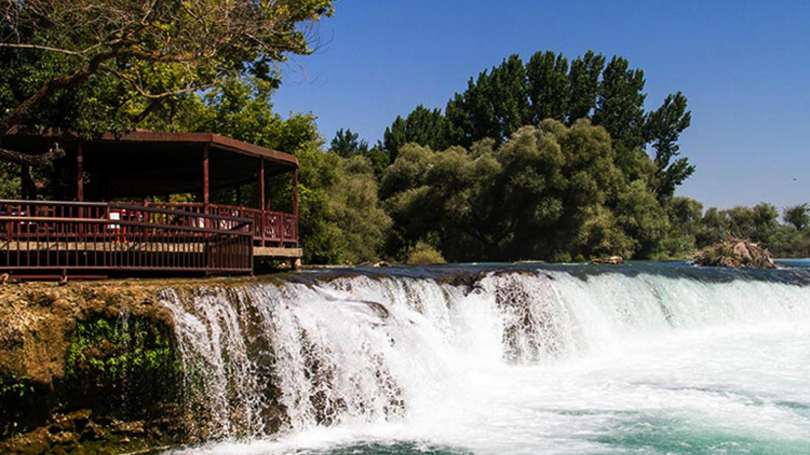

Manavgat Waterfall



Manavgat Waterfall is a stunning natural wonder located in the Manavgat district of Antalya, formed by the cool waters flowing from the Taurus Mountains on their way to the Mediterranean Sea. What sets Manavgat Waterfall apart from many others is the way its waters cascade from a height of about 4–5 meters and spread out over a wide area. The powerful roar of the water combined with the lush green surroundings creates a soothing symphony of nature for visitors. Around the waterfall, tea gardens, walking paths, and observation terraces offer perfect spots to take in the view. Manavgat Waterfall stands out not only for its natural beauty but also for the activities it offers. Visitors can enjoy photography, nature walks, and picnics, making for a delightful time in the heart of nature. For anyone seeking a refreshing escape immersed in greenery, Manavgat Waterfall is a must-see natural treasure. Especially during Antalya's sweltering summer heat, it becomes a popular retreat and reveals a different kind of beauty in every season.
Adress : Sarılar, Istiklal Street no 35,
07600 Manavgat/Antalya
Visitor Ratings of Manavgat Waterfall
Your Reaction?
Your Reaction?
Tazı Canyon


Located within Köprülü Canyon National Park in the Manavgat district of Antalya, Tazı Canyon has recently emerged as a hidden natural wonder waiting to be discovered for its breathtaking beauty. With steep cliffs rising between 200 and 400 meters and a view that resembles a window opening to the sky, it captivates all who visit. Known by locals as the “Valley of Wisdom,” the canyon lies above the deep valley carved by the Köprüçay River. A must-visit destination for nature lovers, campers, photographers, and adventure seekers, Tazı Canyon offers a mesmerizing atmosphere, especially at sunrise and sunset. Although access to the area has become easier in recent years, it still maintains much of its unspoiled character. The cliffside viewing points provide visitors with an experience that is both thrilling and peaceful. Tazı Canyon not only impresses with its visual beauty but also offers a sense of inner calm, allowing visitors to truly connect with nature. This hidden gem of Manavgat enchants in every season, revealing a different kind of beauty throughout the year.
Adress : Gaziler, Gaziler Village road,
07550 Manavgat/Antalya
Visitor Ratings of Tazı Canyon
Your Reaction?
Your Reaction?
Adamkayalar


Rising defiantly from the steep cliffs of the Taurus Mountains stands a fascinating natural formation: Adamkayalar. Named after the rock shapes that resemble human silhouettes, this unique formation is a visual miracle patiently carved by nature itself. Sculpted over time by the combined forces of wind, water, and erosion, these rocks intrigue both nature enthusiasts and photographers with their uncanny resemblance to human figures. At first glance, they may look like ancient sculptures etched by a long-lost civilization, but these shapes are entirely the result of natural processes. The Adamkayalar area, with its serene atmosphere, fresh air, and surrounding natural scenery, is an ideal spot for hiking and exploration. While the path to reach it can be a bit challenging, those who make the journey are rewarded with a truly unforgettable experience, immersed in solitude and stunning views. This hidden gem in Manavgat has preserved its untouched beauty by remaining off the beaten tourist path. When you step into this remarkable place, you find yourself not only admiring the rocks—but also the patience and artistry of nature itself.
Adress : Ballıbucak, 07550 Manavgat/Antalya
Visitor Ratings of Adamkayalar
Your Reaction?
Your Reaction?
Manavgat River


Flowing from the Manavgat district of Antalya into the Mediterranean Sea, the Manavgat River is one of the region’s most vital waterways, both as a source of life and natural beauty. Fed by the snowmelt from the Taurus Mountains, this river is a true natural treasure, with its lush surroundings, cool waters, and rich ecosystem. The Manavgat River attracts thousands of local and international visitors not only with its scenic beauty but also with the variety of activities it offers. Boat tours, rafting, fishing, picnicking, and photography along the river provide an immersive experience in nature. The river and its surroundings are also home to a wide array of birds and aquatic life, making it an ideal destination for nature lovers and ecotourism enthusiasts. At sunset, the light reflecting off the water creates a view so picturesque it resembles a painting. Whether you're seeking tranquility or adventure, the Manavgat River stands out as one of the finest places to connect with nature.
Adress : Manavgat Merkez
Visitor Ratings of Manavgat River
Your Reaction?
Your Reaction?
Tilkiler Cave


Tilkiler Cave is one of the most striking and mysterious natural formations in the region. Said to be named after the foxes frequently seen in its surroundings, the cave is a fascinating destination for both nature lovers and cave researchers. Formed over thousands of years through the dissolution of limestone rock, Tilkiler Cave features stalactites and stalagmites that resemble sculptures patiently shaped by nature. The cave interior is cool and humid, providing a natural air conditioning effect even during the hottest summer days—offering visitors both physical and mental refreshment. With its narrow passages, high-ceilinged chambers, and naturally sculpted formations, the cave feels like a gateway to another world. Its sense of mystery and adventure makes it a perfect spot for hikers, photographers, and explorers alike. Because it lies off the beaten tourist paths, Tilkiler Cave has managed to preserve its pristine, quiet, and peaceful atmosphere—a hidden haven in nature.
Adress : Sevinçköy, 07600 Manavgat/Antalya
Visitor Ratings of Tilkiler Cave
Your Reaction?
Titreyen Lake


Titreyen Göl, or “Shimmering Lake,” takes its name from the small ripples that continuously form on its surface. The lake appears to “tremble” throughout the day, creating a mesmerizing natural scene and offering visitors a visual spectacle. This unique phenomenon is caused by the wind gently rippling across the water’s surface. Located on the eastern banks of the Manavgat River, Titreyen Göl is surrounded by reed beds, bird nests, and natural habitats. The lake and its surroundings are home to hundreds of bird species. Flamingos, herons, and various waterfowl turn the area into a true birdwatcher’s paradise. As such, it is an ideal spot for birdwatching and nature photography enthusiasts. Titreyen Göl is also a peaceful retreat for those seeking rest and relaxation, with walking paths, seating areas, and a calm atmosphere. Nearby forested areas provide opportunities for picnicking and gentle nature walks. The lake’s serene, nature-integrated setting has made it a popular destination for both locals and tourists alike.
Adress : Sorgun,Titreyengöl, 07600 Manavgat/Antalya
Visitor Ratings of Titereyn Lake
Your Reaction?
Altınbeşik Cave


Altınbeşik Cave is one of the largest and most impressive caves in Turkey. It takes its name from the yellowish-golden mineral layers found inside, and it offers a captivating atmosphere with its vast depths. Showcasing the mysterious beauty of the underground world, the cave is shaped by karstic formations and a rich internal structure. With a length of up to 250 meters and spacious chambers, Altınbeşik stands out for its grandeur. The stalactites, stalagmites, and massive stone blocks resting on the cave floor are the result of natural processes spanning thousands of years. Upon entering, visitors are greeted by the cave’s cool interior and have the chance to closely observe its stunning geological features. Altınbeşik Cave is also home to an underground lake, which enhances its mystical ambiance. Exploring the cave feels like embarking on a journey where time stands still. Hidden in the heart of Manavgat’s natural landscape, this unique cave is also a significant tourist attraction, drawing interest from both domestic and international visitors each year. Visiting Altınbeşik Cave is an unmissable experience for anyone eager to discover both natural wonders and geological history.
Adress : Antalya, Ürünlü, 07680 İbradı/Antalya
Visitor Ratings of Altınbeşik Cave
Your Reaction?
Oymapınar Barrage


Oymapınar Dam is one of the most impressive structures in the region. Built in the 1980s on the Manavgat River, the dam was constructed to regulate the region’s water resources and generate electricity. However, Oymapınar is not only a feat of engineering—it also captivates visitors with the natural beauty that surrounds it. The reservoir, set against lush green forests, offers a paradise-like setting for nature lovers. Its deep blue waters are framed by towering mountains, creating a breathtaking landscape. Walking along the lake’s edge or taking a boat tour provides a peaceful and memorable experience for visitors. Oymapınar Dam is also ecologically significant. The reservoir is home to many species of waterfowl, making it an ideal spot for birdwatching. In addition, fishing and picnicking are popular activities around the dam. For those looking to spend time in a tranquil setting immersed in nature, Oymapınar offers a rare combination of structural marvel and natural beauty. Whether you're in search of serenity or adventure, there is much to explore and enjoy in this remarkable destination.
Adress : Oymapınar, 07600 Manavgat/Antalya
Visitor Ratings of Oymapınar Barrage
Your Reaction?
Gizli Cennet


Gizli Cennet is one of the favorite destinations for nature lovers and adventure seekers. This secret paradise, with its natural beauty, is like an island of tranquility and a true natural wonder for those wanting to discover a hidden gem. Surrounded by lush forests, adorned with natural waterfalls, and blessed with crystal-clear waters, this area offers a captivating retreat. Known for its breathtaking views, natural hiking trails, and peaceful atmosphere, Gizli Cennet immerses visitors in a different world, filled with rich vegetation and the soothing sounds of birds. Offering a chance to connect with nature, it stands out for its serenity and untouched beauty, far from the more popular tourist areas. Attracting those interested in activities such as camping, hiking, and photography, Gizli Cennet is also an ideal spot for those seeking rest and mental peace.
Adress : Kalemler, 07600 Manavgat/Antalya
Visitor Ratings of Gizli Cennet
Your Reaction?
Köprülü Canyon


Köprülü Canyon National Park, located in the Manavgat district of Antalya, is one of Turkey's longest and most impressive canyons. Spanning 14 kilometers in length and reaching depths of over 100 meters at some points, this canyon offers an unparalleled destination for nature enthusiasts and adventure seekers. Köprülü Canyon takes its name from the Oluk Bridge, a Roman-era structure located within the canyon. This historic bridge is one of the canyon’s symbols, reflecting the region's rich history. The Köprüçay River, which flows through the canyon, maintains a high water flow throughout the year, providing opportunities for water sports such as rafting and canoeing. For this reason, the area is a popular hub for water sports enthusiasts.
Adress : Beşkonak, 07550 Manavgat/Antalya
Visitor Ratings of Köprülü Canyon
Your Reaction?
Side Ancient City


Side Ancient City is one of the most important and best-preserved ancient cities on the Mediterranean coast. Founded in the 7th century BC, this historic city bears traces of ancient Greek, Roman, and Byzantine civilizations. Side enchants its visitors not only with its historical wealth but also with its harmonious integration with nature. The Side Ancient City is an enclosed historic area featuring significant structures such as the ancient theater, the Temple of Apollo, the Ancient Harbor, and the Agora. The ancient theater, with a capacity of 15,000 people, is exceptionally well-preserved and stands out for both its architectural and acoustic features. The Ancient Harbor and its surroundings highlight Side's importance as a maritime and commercial center in antiquity. The Agora, which served as the heart of the city’s trade and social life, along with structures like the Bathhouse and Stadium, offer insight into the social life of the ancient city. Visitors can enjoy the beach at Side Beach while also exploring the ancient ruins. Additionally, many restaurants in the city offer elegant venues where you can experience traditional Turkish cuisine.
Adress : Selimiye Mahallesi, Çağla Street, 07330 Manavgat/Antalya
Visitor Ratings of Side Ancient City
Your Reaction?
The Temple of Apollo


The Temple of Apollo, located within the Side Ancient City, is one of the most famous and impressive structures in the region. Built in the 2nd century BC, this temple is dedicated to Apollo, the Greek god of the sun and light. The temple holds great historical and architectural significance. The Temple of Apollo is renowned for its Ionic-style columns. The temple’s exterior, with its six-columned façade, is striking, and although these columns have been significantly damaged over time, they still present an awe-inspiring view. The original structure of the temple, with its enormous size and grandeur, was considered one of the largest temples of its time. The area where the Temple of Apollo stands offers a magnificent view of the Mediterranean. Overlooking Side's ancient harbor and the surrounding nature, this temple served as both a religious and social center. The religious ceremonies and events held at the temple contributed greatly to the cultural life of the region. The Temple of Apollo is one of the most photographed structures in the Side Ancient City. Visitors capture stunning photos in front of the temple while immersing themselves in the historical atmosphere. Especially at sunset, the columns of the temple offer a magnificent visual feast.
Adress : Side, Cumhuriyet Blv. No:50, 07600 Manavgat/Antalya
Visitor Ratings of The Temple of Apollo
Your Reaction?
Side Museum


The Side Museum, located in the ancient city of Side in Antalya's Manavgat district, is housed in a Roman bath building constructed in the 2nd century AD. The museum boasts a rich collection from the Late Bronze Age, Hellenistic, Roman, and Byzantine periods. The exhibited artifacts include statues, sarcophagi, inscriptions, reliefs, busts, jewelry, architectural fragments, pottery, glass, bronze finds, and coins. The museum building is organized within the various sections of the Roman bath, such as the cold room (Frigidarium), warm room (Tepidarium), hot room (Caldarium), and sweating room (Sudatorium), which are now used as exhibition halls. Notable Artworks: The Three Graces Statue: Representing Hera, Aphrodite, and Athena, this statue symbolizes elegance and fertility. The Poseidon Frieze: Located in the bath's courtyard, this frieze depicts the mythological stories of Poseidon, the god of the seas. Roman Sundial: Situated in the museum's garden, this sundial demonstrates how time was measured in antiquity.
Adress : Side, Liman Cd., 07330 Manavgat/Antalya
Visitor Ratings of Side Museum
Your Reaction?
Oluk Bridge


The Oluk Bridge is a historic structure located within the boundaries of Köprülü Canyon National Park. Built in the 2nd century BC during the Roman Empire, this bridge has been well-preserved to the present day. Oluk Bridge is a perfect example of Roman engineering and was constructed with ancient engineering knowledge. The bridge is approximately 22 meters long and about 7 meters wide. Decorated with Ionic columns and arches, the bridge holds significant architectural and historical importance. Another important feature of Oluk Bridge is that it was part of the ancient waterway system. Water was directed to this bridge through aqueducts, allowing the flow of water from the mountains to be delivered to agricultural areas. This played a vital role in the region's agricultural life. Today, Oluk Bridge is frequently visited by both history enthusiasts and nature lovers. The bridge, combined with the unique natural beauty of Köprülü Canyon, offers tourists a rich experience of both history and nature. Additionally, the area around the bridge has become a popular spot for outdoor activities such as hiking and photography.
Adress : Karabük, Unnamed Road, 07550 Manavgat/Antalya
Visitor Ratings of Oluk Bridge
Your Reaction?
Etenna Ancient City


Etenna Ancient City is an ancient settlement located in the mountainous area between Alanya and Manavgat, in the interior of the Mediterranean. Etenna is historically situated near the borders of the Lycia and Pamphylia regions and is frequently mentioned in ancient sources. This settlement was an important center between the 3rd century BC and the 5th century AD. Etenna is known as one of the most significant cities in western Lycia. The ruins in the city, especially those from the Roman period, attract attention with their architectural examples. One of the most important structures of Etenna Ancient City is the city’s castle walls, which were built on a high hill. These walls symbolize the historical defense of the region and were also designed to protect the city from external attacks. Another notable feature of Etenna is its ancient theater. The theater provides valuable insights into the city’s social life. With a capacity of 1,000 to 1,500 people, the theater was used for major events during its time.
Adress : Sırtköy, 07600 Manavgat/Antalya
Visitor Ratings of Etenna Ancient City
Your Reaction?
Selge Ancient City


Selge Ancient City is particularly notable for its Roman-era ruins and remains. Founded in the 4th century BC, Selge was one of the important cities in the Pisidia region during ancient times and experienced significant development during the Roman Empire. Located in a mountainous area, Selge is strategically positioned geographically. This high location made the city advantageous in terms of defense, while also offering the opportunity to enjoy the stunning natural beauty surrounding it. Among the most prominent structures in Selge Ancient City are the ancient theater and the city walls. The Selge Ancient Theater, with a capacity of approximately 5,000 people, was a venue for the major events of its time. Additionally, the city's ancient baths, cisterns, and agora provide valuable insights into daily life in the city. The stone craftsmanship on the city walls is also highly impressive. Today, Selge Ancient City is a major point of interest for both history and nature enthusiasts. This ancient city, intertwined with natural beauty, is also conveniently located near many mountain hiking trails in the region.
Adress : Altınkaya, 07550 Manavgat/Antalya
Visitor Ratings of Selge Ancient City
Your Reaction?
Seleukeia - Lyrbe Ancient City


Seleukeia - Lyrbe Ancient City is an ancient settlement of great historical and archaeological significance. Seleukeia, founded in the 3rd century BC, dates back to the Seleucid period, particularly the Hellenistic kingdoms established after Alexander the Great. The city is also known as Lyrbe and was an important city in the Lycian region. Seleukeia - Lyrbe Ancient City is situated on a high hill, and it stands out especially for its natural beauty. The city’s historical heritage blends impressive Roman-era structures with remains from the Hellenistic and Byzantine periods. Historical traces can be found in almost every corner of the city. Structures such as temples, baths, and cisterns are important for understanding the city’s daily life. Additionally, the city is known for its defensive walls, built for protection. Due to its location in a mountainous area, Seleukeia - Lyrbe is also renowned for its natural surroundings. Excavations in the city have revealed that it was an agricultural settlement, with the inhabitants of ancient times relying on farming and livestock for their livelihood.
Adress : Bucakşeyhler, Manavgat Cd.,
07330 Manavgat/Antalya
Visitor Ratings of Seleukeia - Lyrbe Ancient City
Your Reaction?
Yörük Museum


The Museum aims to promote the Yörük culture. The museum is built on an area of approximately 4,000 m² and has a closed exhibition space of 464 m². It presents nearly 1,000 ethnographic items that showcase the traditional lifestyle of the Yörük people. The museum comprehensively exhibits Yörük life under themes such as Yörük Settlements, Social Life of the Yörüks, Weaving and Handicrafts, Livestock, Agriculture, and Culinary Culture. Additionally, interactive experiences are offered to visitors through Yörük tents, oil wrestling reenactments, and scenes supported by sculptures.
Adress : Evren Mahallesi, Küme Evleri No:8,
07600 Manavgat/Antalya
Visitor Ratings of Yörük Museum
Your Reaction?
Kent Museum


Manavgat Kent Museum is a modern museum covering an area of 1200 m², with 6 main exhibition halls and 14 different sections. The museum introduces Manavgat's historical, cultural, and natural heritage through rich visuals and objects. The content of the museum is designed to allow visitors to connect with the city both visually and experientially. In the Yörük Culture section, traditional Yörük tents, clothing, everyday household items, and handwoven carpets are displayed. The Cretan Culture section reflects the cultural heritage of the Cretan Turks who settled in Manavgat. In the Agriculture and Craft sections, farming tools, woodworking, blacksmithing, and weaving looms used in the past are exhibited. In the Cuisine Culture area, traditional Manavgat kitchen tools and local food presentations are featured. The museum also has a dedicated section for nature. This area includes information panels and recreations about the Manavgat River, the Toros Mountains, and the local flora and fauna. Additionally, the products made by Toros women, visual archives depicting the city's history, projection rooms, a library, and a city café as a relaxation area are also key parts of the museum.
Adress : Aşağı Mahallesi, Aşağı Hisar, 4517. Sk.
NO:3-1, 07600 Manavgat/Antalya
Visitor Ratings of Kent Museum
Your Reaction?
Novamall


It is one of the largest and most modern shopping centers in the region. Frequently visited by both locals and tourists, this mall is not just a shopping destination but also the hub of social life. It houses a variety of stores in categories such as fashion, technology, cosmetics, and home living products. Both local and international brands are available for visitors here. In addition to shopping, there are dining areas ranging from fast food chains to cafes and restaurants, offering a wide range of options. Novamall is particularly attractive for families with children. The mall features children's play areas, amusement park-style entertainment centers, and various kids' activities. Additionally, a cinema hall offers visitors the opportunity to watch the latest films. Novamall hosts events throughout the year that cater to different age groups. These events include children's workshops, live music performances, and local markets, offering a range of social and cultural experiences.
Adress : Alanya, Antalya yolu, Sorgun, 8096. Sk No:5,
07600 Manavgat/Antalya
Visitor Ratings of Novamall
Your Reaction?
Central Külliye Mosque


Built in 2004, this mosque is the largest in the Antalya region and has the capacity to accommodate 4,000 worshippers at the same time. The mosque's architecture is designed as a modern interpretation of traditional Ottoman style. Its main dome is 30 meters high, surrounded by 27 smaller domes. The mosque features four minarets, each 60 meters tall and built with three balconies. The name "Külliye," associated with the mosque, refers to a complex that includes not only the prayer hall but also various social services. Within the mosque's grounds, there is a madrasa, a soup kitchen, a bakery, a hammam, and various charitable institutions. Additionally, translations of the Quran are available in several languages (English, German, French, Russian, and Italian) to provide foreign visitors with information about Islam. The mosque has become one of the symbolic structures of Manavgat due to its architectural aesthetics and the services it offers. Providing a peaceful atmosphere, it is an important stop for those wishing to pray as well as for those seeking a cultural experience.
Adress : Aşağı Pazarcı, 1517. Sk.,
07600 Manavgat/Antalya
Visitor Ratings of Central Külliye Mosque
Your Reaction?
Yapay Şelale


Located near the center of Manavgat, Türkbeleni Yapay Şelalesi was built to enhance the city's landscape richness and provide the public with a space to connect with nature. Designed in five stages, the waterfall is surrounded by natural stones and vegetation, offering a peaceful experience for visitors with the visual and auditory tranquility created by the flowing water. The Türkbeleni City Park, where the waterfall is situated, caters to both those looking to exercise and those seeking relaxation, with its expansive green areas, walking paths, and seating areas. Especially during the summer months, this location is an ideal place for those wanting to cool off and immerse themselves in nature, while also providing unique photo opportunities for photography enthusiasts.
Adress : Yukarı Hisar, 07600 Manavgat/Antalya
Visitor Ratings of Yapay Şelale
Your Reaction?
Upside Villa


Known as the largest upside-down house in Turkey, Ters Villa is an extraordinary tourist attraction. With its architecture and interior design, it offers visitors a unique experience, defying gravity. From the outside, the roof faces the ground while the foundation points towards the sky. Upon entering the house, visitors can observe that all the furniture and objects are suspended from the ceiling. Furniture, kitchenware, beds, and even bathroom accessories are placed in an upside-down manner. Visitors can take interesting photos while walking through this inverted world, enjoying a fun time in an environment that challenges their perception. All the items inside Ters Villa are real and functional, making the experience even more impressive.
Adress : Sorgun, 8090. Sk. No:8, 07600 Manavgat/Antalya
Visitor Ratings of Upside Villa
Your Reaction?
Sorgun Mesire Area


Sorgun Mesire Area, with its proximity to both the sea and the forest, is one of the favorite spots for nature lovers. Located within expansive pine forests, this area offers cool air, an atmosphere filled with bird songs, and shaded spots, making it especially ideal for relaxation during the summer months. With picnic tables for families, walking paths, and safe play areas for children, it is frequently visited by both locals and tourists. The natural terrain of Sorgun Mesire Area also makes it perfect for activities such as morning walks, cycling, photography, and nature observation. Offering tranquility and peace, it provides a perfect escape from the city noise. Especially for those looking to reconnect with nature, breathe fresh air, and find peace, it is one of the ideal locations around Manavgat.
Adress : Sorgun, Titreyengöl Cd. No:3,
07600 Manavgat/Antalya
Visitor Ratings of Sorgun Mesire Area
Your Reaction?
Boğaz Picnic Area


Boğaz Picnic Area is a unique natural site located at the meeting point of the Manavgat River and the Mediterranean Sea. With its position nestled between the sea and the river, it offers visitors a peaceful and serene atmosphere. Especially during the summer months, it provides a great opportunity for those looking to cool off with the natural beauty of both the sea and the river. This picnic area, with its shaded trees and wide grassy fields, is an ideal spot for relaxing and spending time in nature. Sorgun Boğaz Picnic Area is not only perfect for picnics but also for walking, swimming in the sea and river, photography, and nature observation. The surrounding flora and fauna offer rich biodiversity for nature lovers interested in observing wildlife. Combining the tranquility of nature with access to water activities, this area provides a perfect escape for anyone seeking rest and relaxation in the calm of Manavgat.
Adress : Sorgun, Titreyengöl Cd. No:3,
07600 Manavgat/Antalya
Visitor Ratings of Boğaz Picnic Area
Your Reaction?
Side Underwater Museum


The Side Underwater Museum is recognized as the largest underwater museum in Europe and offers a unique experience for diving enthusiasts. This museum features ancient sculptures, sunken ships, and various other underwater artifacts. Scuba diving tours in Side are suitable for both experienced divers and beginners. Dives are conducted at depths ranging from 3 to 8 meters and typically last around 30 minutes. Before the dive, participants receive a brief training session, all necessary equipment is provided, and the dive is carried out under the supervision of a professional instructor. Some tours also offer underwater photography services.
Adress : Side, Liman Cd., 07330 Manavgat/Antalya
Visitor Ratings of Side Underwater Museum
Your Reaction?
Discovery Park


One of the most fascinating sections of Discovery Park is the Dinopark, featuring 48 sensor-activated dinosaur figures. Visitors can closely observe these giant creatures accompanied by realistic movements and sounds, while learning about their history. This area offers a fun and educational experience, especially exciting for children. Zoo: Another major part of the park is the Zoo, which hosts a variety of exotic animals such as lions, tigers, llamas, and wild boars, housed in enclosures designed to resemble their natural habitats. Visitors can enjoy a close-up encounter with these animals and gain a deeper appreciation for nature’s diversity. Aquarium: The Aquarium section provides a wonderful opportunity to explore marine life. Here, visitors can view a variety of sea creatures and learn more about underwater ecosystems—an ideal spot for those interested in ocean exploration. Cafeteria Area: This space offers visitors a chance to relax during their time in the park. With a variety of food and beverage options, it’s a great place for families and children to unwind and enjoy snacks while soaking in the park’s unique atmosphere.
Adress : Ilıca, Antalya Blv., 07600 Manavgat/Antalya
Visitor Ratings of Discovery Park
Your Reaction?
Central Street


Located in the heart of Manavgat, Merkez Cadde is one of the city's most vibrant, busiest, and most frequently visited spots. As the center of both social life and commerce for locals and tourists alike, this main street lies within walking distance of the Manavgat River and serves as a key connection point to different neighborhoods in the city. Along the street, visitors will find a wide variety of local shops, national and international brands, cafés, restaurants, patisseries, and clothing stores, offering a rich shopping and dining experience. Especially during the summer months, Merkez Cadde becomes noticeably crowded. The city’s old bazaar originally developed in this area and, over time, evolved into its current modern form with well-planned infrastructure and contemporary retail spaces. Once a hub for neighborhood markets and local merchants, the street has now transformed into a modern commercial axis. In addition, various cultural events, holiday celebrations, and festivals are occasionally organized along the avenue, making it not just a shopping destination but also a lively social gathering place.
Adress : Yukarı Hisar, Antalya Cd.,
07600 Manavgat/Antalya
Visitor Ratings of Central Street
Your Reaction?
Oymapınar Adventure Park


Located on the shores of the Oymapınar Dam, this open-air adventure park spans approximately 40 acres and offers a range of activities for nature lovers and adrenaline seekers. Set among pine trees, the park features rope courses, suspension bridges, wooden bridges, and a 140-meter-long zipline. These activities challenge participants’ balance, courage, and coordination skills. Completing the full course takes about 2.5 hours. Oymapınar Adventure Park is a popular destination among both local and international visitors and is ideal for those looking to spend a day immersed in nature. Visitors can enjoy action-packed moments in a fun yet safe environment.
Adress : Igrislar Mah, 1001 Sok, 07600 Manavgat/Antalya
Visitor Ratings of Oymapınar Adventure Park
Your Reaction?
Ahmetler Canyon


Ahmetler Canyon, formed by the Karpuz Stream fed from the Taurus Mountains, is a true paradise for nature enthusiasts. Stretching approximately 12 kilometers in length and reaching depths of up to 400 meters in some parts, it holds the distinction of being the third deepest canyon in Turkey. Surrounded by steep slopes and rugged cliffs, the canyon receives limited sunlight, offering a naturally cool atmosphere during the summer months. As you hike through the canyon, you’ll encounter natural formations such as waterfalls, sinkholes, caves, and siphons. The area is home to a diverse range of wildlife including birds of prey like eagles, vultures, and hawks, as well as land animals such as mountain goats, squirrels, and turtles. Its crystal-clear, refreshing waters provide a perfect swimming opportunity, especially appealing on hot summer days. The surrounding areas are ideal for picnicking and camping, making it a popular spot for outdoor adventurers. With its natural beauty and rich ecosystem, Ahmetler Canyon also offers countless photo opportunities for photography enthusiasts.
Adress : Köprübaşı Mevkii Ahmetler Mah. No:1,
07600 Manavgat/Antalya